Placeholder story
Our story
More to come soon — check back for the story of how it all began.
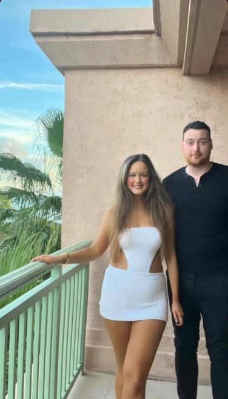
Thursday, 13 May 2027 at 3:45 pm
Collegiate Church of the Nativity of Our Lady, Naxxar
Palazzo Parisio, Naxxar
Formal attire required (black tie optional)
Our ceremony and reception are both in Naxxar, in the north of Malta — a small island, so most areas are within a 20–40 minute drive.
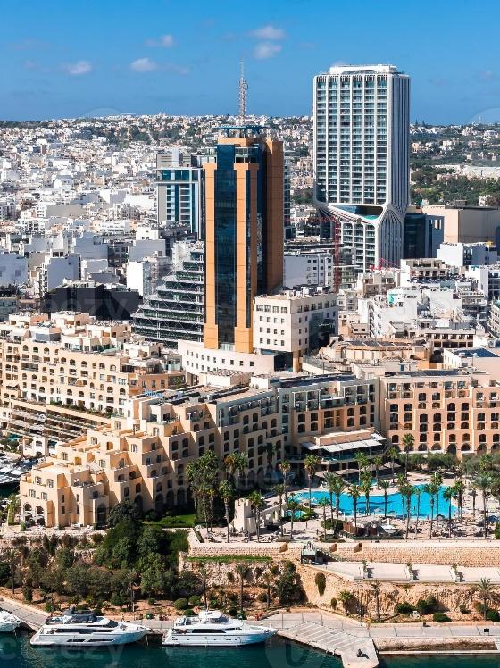
If the rate doesn’t apply automatically, enter corporate code 35238 under Special Rates.
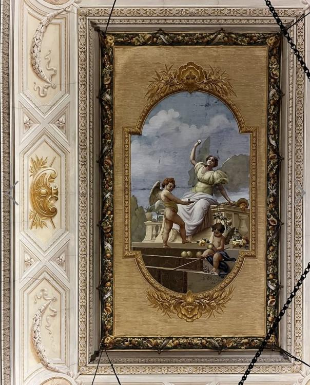
Fly into Malta International Airport, approximately a 15-minute drive to St Julian’s.
Please note taxis and buses are available at Malta International Airport.
There are reserved rooms in the Hilton Hotel; nearby accommodation is also available.
Complimentary bus transfer from the Hilton Hotel in St Julian’s to Naxxar.
May in Malta is warm and bright, with a light breeze in the evening.
We ask guests to please wear formal attire for the day of the wedding — elegant but breathable for a warm evening outdoors. Expect 22–24°C by day, cooling to 16–18°C in the evening — sunshine is likely with little chance of rain, so bring a light layer for after dark.
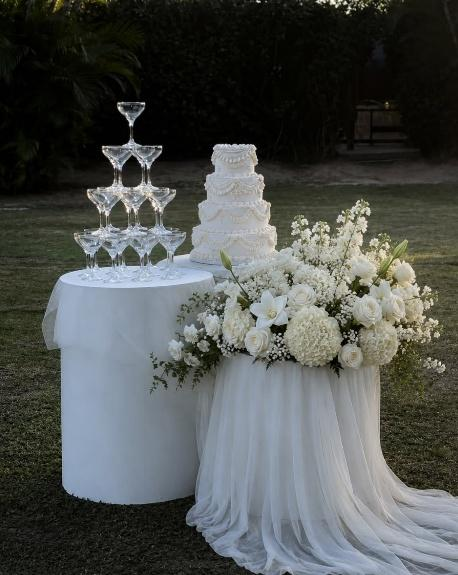
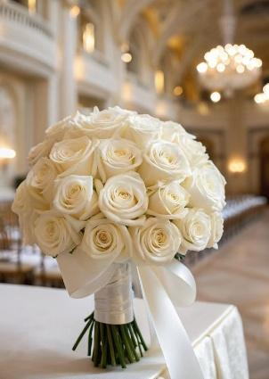
The wedding day — Thursday 13 May 2027
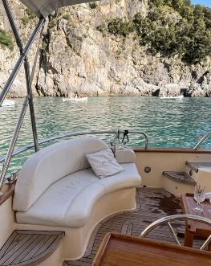
Friday 14 May 2027 — join us for a relaxed day on the water as the celebrations continue. More details to follow.
Collegiate Church of the Nativity of Our Lady — Naxxar, Malta
View map →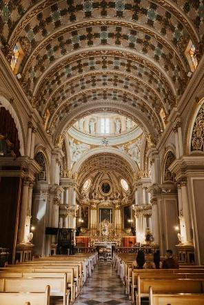
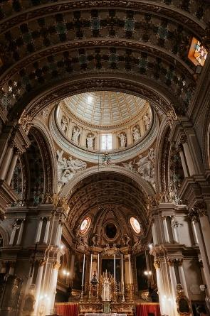
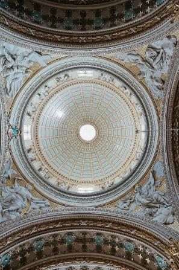
We are delighted to be celebrating our wedding at the Collegiate Church of the Nativity of Our Lady, Naxxar. Steeped in history and tradition, this magnificent Baroque church has been at the heart of the village for centuries and is one of Malta’s most iconic landmarks. Built in the early 1600s on the site of earlier churches, it is renowned for its beautiful architecture, impressive dome, intricate artwork, and stunning interior. Among its many unique features are the famous twin clocks on the façade, one of which has remained frozen at 11:45 for generations, adding a little character and local charm. We instantly fell in love with the church’s beauty, history, and atmosphere, and we couldn’t think of a more special place to celebrate the beginning of our next chapter together.
Guided through the Grand Entrance Hall — Naxxar, Malta
View map →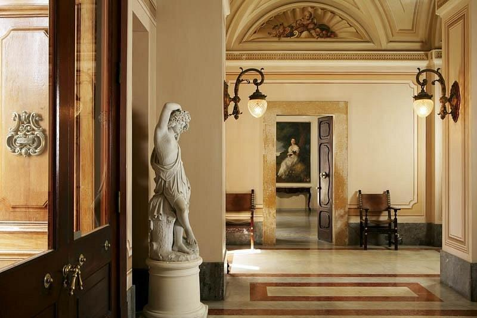
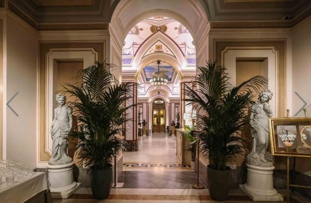
Following our ceremony, we are delighted to welcome you to Palazzo Parisio in Naxxar for our wedding reception. Often described as Malta’s “mini Versailles”, this extraordinary palace is one of the island’s most treasured landmarks. Although its origins date back to the early 1700s, the palace we see today was transformed by Marquis Giuseppe Scicluna, who purchased the property in 1898 and set out to create a magnificent family residence unlike anything else in Malta. Working with renowned Italian architects, artists and craftsmen, he filled the palace with stunning frescoes, marble staircases, gilded rooms and elegant details that remain beautifully preserved to this day. Situated directly opposite the church, Palazzo Parisio felt like the perfect setting for us to continue the celebrations with all of our family and friends.
As you step through the Palazzo’s famous bronze doors, you are greeted by a spectacular marble hall lined with statues, family portraits and ornate frescoes. This impressive entrance was designed to make a statement, offering guests a first glimpse into the grandeur and elegance of the palace. From the moment we first walked through the doors, we were captivated by the sense of history and occasion that fills every corner of the building.
Upstairs Terrace, Palazzo Parisio — Naxxar, Malta
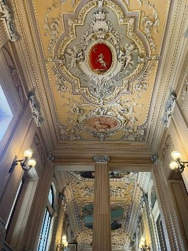
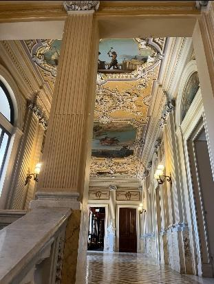
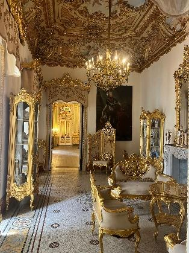
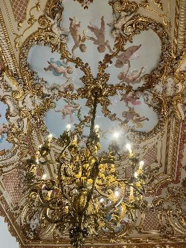
One of the most striking features of Palazzo Parisio is the magnificent marble staircase, which gracefully connects the palace’s grand interiors to the terrace overlooking the gardens. Surrounded by ornate frescoes, gilded details and an impressive collection of paintings and family portraits, this area perfectly reflects the elegance and grandeur envisioned by Marquis Giuseppe Scicluna when he transformed the Palazzo. The staircase itself is particularly remarkable, being carved from a single block of marble, a feature that is often cited as one of the largest pieces of its kind used in a private residence in Europe. From the terrace, guests can admire sweeping views of the beautiful gardens below while taking in the rich history and craftsmanship that make Palazzo Parisio so unique. It is a truly breathtaking setting and one of our favourite parts of the venue.
The Ballroom, Palazzo Parisio — Naxxar, Malta
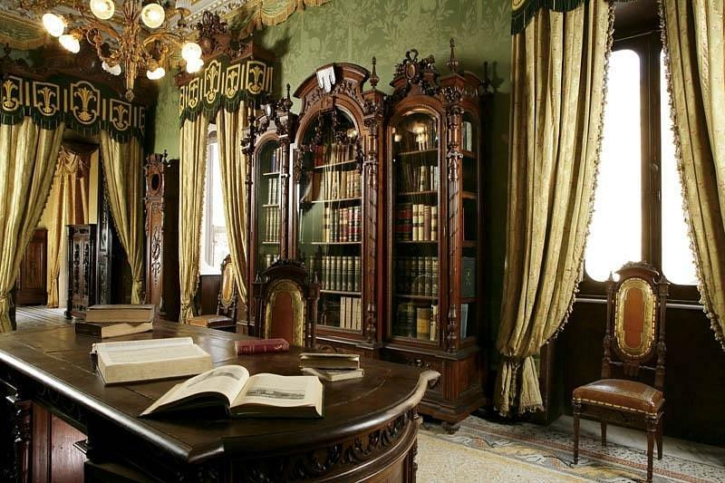
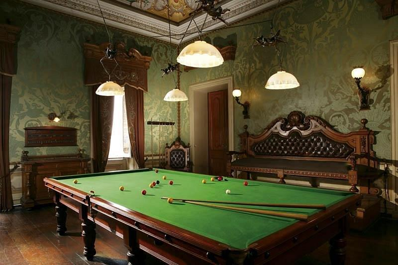
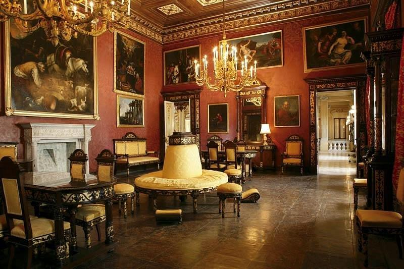
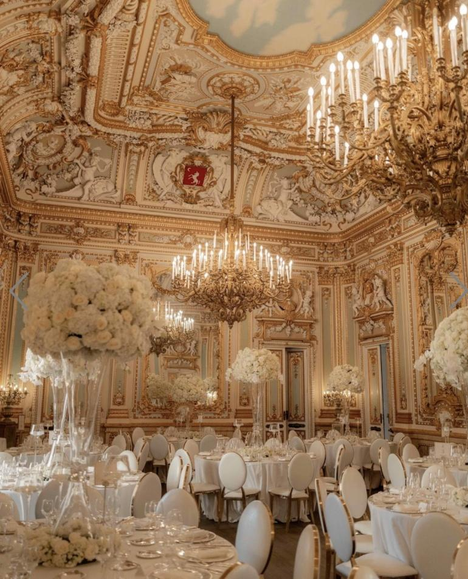
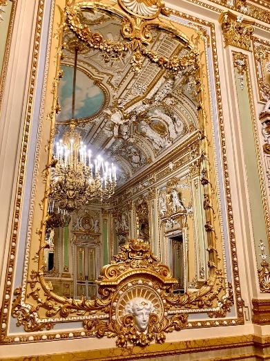
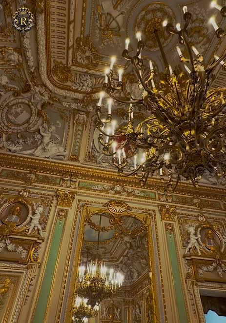
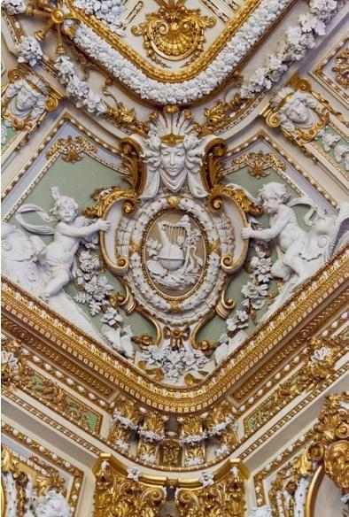
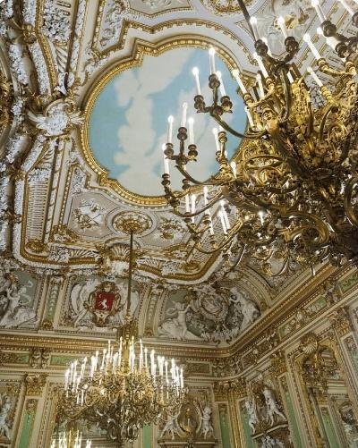
At the heart of Palazzo Parisio lies the magnificent Ballroom. Designed to rival the grand salons of Europe’s finest palaces, the room is richly decorated with gilded mirrors, ornate plasterwork, hand-painted ceilings and sparkling chandeliers that reflect light throughout the space. Every detail was carefully chosen by the Marquis and the Italian craftsmen he commissioned, creating an atmosphere of elegance and grandeur that has endured for generations. Originally intended for hosting distinguished guests and lavish family gatherings, the Ballroom continues to be a place of celebration and joy today. The moment we stepped inside, we could immediately imagine sharing such an important day with our family and friends in a setting so full of history, character and timeless romance.
The Gardens, Palazzo Parisio — Naxxar, Malta
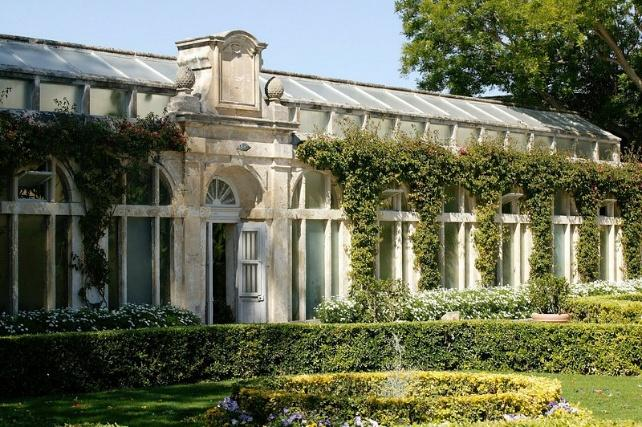
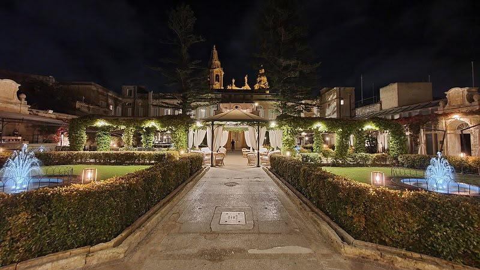
The Palazzo’s gardens are among the most beautiful private gardens in Malta and are often considered one of its hidden gems. Designed in the Italianate style, they feature elegant pathways, ornate fountains, centuries-old olive trees, vibrant bougainvillea, citrus trees and carefully manicured lawns. The gardens can trace their roots back to the 18th century and even include a historic Orangery and stone grotto. Full of colour, fragrance and charm, they provide a truly magical backdrop for our celebrations, and we cannot wait to enjoy it with you all.
The Cellar, Palazzo Parisio — Naxxar, Malta
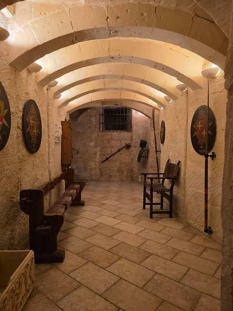
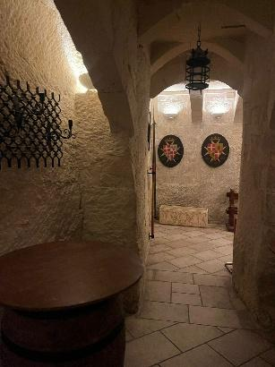
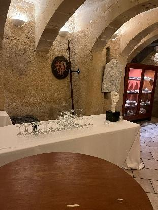
Beneath all the grandeur of the palace lies one of its most atmospheric spaces, the historic cellar. Built from traditional Maltese limestone, it offers a fascinating glimpse into the Palazzo’s past and the daily life of the families who once lived here. While guests are often captivated by the opulence above ground, the cellar serves as a reminder of the centuries of history that give Palazzo Parisio its unique character and charm. As the evening unfolds, we can’t wait to let our hair down, raise a glass, and enjoy the end of what we hope will be a fun and enjoyable day for all our guests.
More to come soon — check back for the story of how it all began.

Malta is full of history, culture, beautiful scenery, and plenty of opportunities to relax and explore. If you’re extending your trip, here are a few of our favourite recommendations.
Explore Valletta. Malta’s capital city is a UNESCO World Heritage Site and is packed with beautiful architecture, charming streets, and incredible views over the Grand Harbour. Take some time to wander through the city, enjoy a coffee in one of its many squares, and soak up the atmosphere.
Visit St. John’s Co-Cathedral. One of the highlights of Valletta is St. John’s Co-Cathedral. The exterior is surprisingly modest, but the interior is breathtaking, with ornate gold decoration, magnificent artworks, and centuries of history around every corner. We were genuinely amazed when we first visited and couldn’t believe the level of detail throughout the cathedral.
Take a day trip to Gozo. Gozo, Malta’s sister island, offers a slower pace of life, stunning coastal scenery, and some of the most beautiful views in the Maltese Islands. During one of our visits, we explored Gozo on a speedboat tour and absolutely loved it. It’s a fantastic way to see the coastline, hidden coves, and crystal-clear waters, and it’s an experience we would highly recommend.
Discover Mdina, the Silent City. Known as the “Silent City”, Mdina is Malta’s ancient walled capital. With its narrow streets, grand architecture, and incredible views across the island, it’s one of the most atmospheric places in Malta. It’s the perfect spot for an afternoon stroll and a long lunch.
Relax by the sea. Sometimes the best way to enjoy Malta is simply to slow down and take in the coastline. Whether it’s a swim in the Mediterranean, a walk along the seafront in St. Julian’s, or an afternoon enjoying the sunshine at one of the island’s many beach clubs, there are plenty of opportunities to relax and make the most of your stay.
We hope you’ll have the chance to enjoy some of what Malta has to offer during your visit, and create a few memories of your own along the way.
We understand that travelling to Malta for our wedding may not be possible for everyone, and we completely understand if you cannot make it. Please know that your friendship, support, and well wishes mean the world to us. If you are able to join us, we kindly ask that you RSVP by 31st January 2027 to help us finalise the arrangements for what promises to be a very special day.
Your RSVP has been received.
Something went wrong sending your RSVP. Please try again, or email us directly.